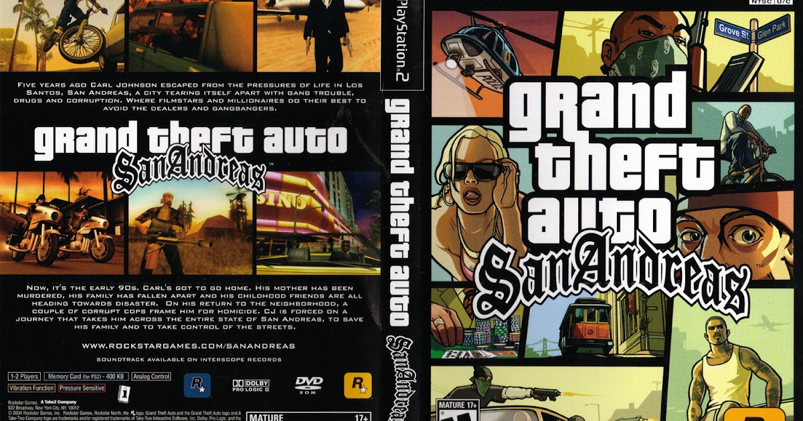
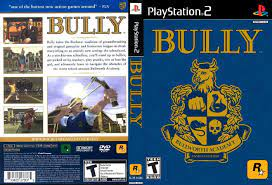
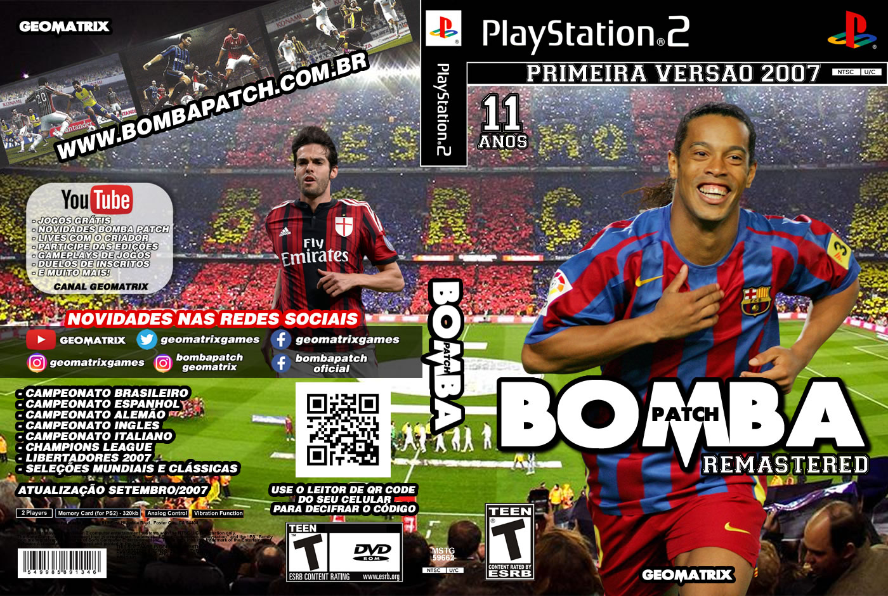
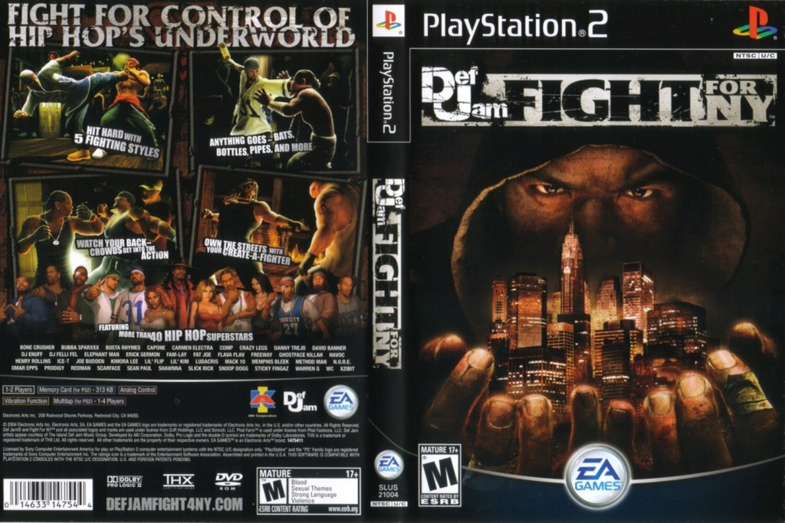
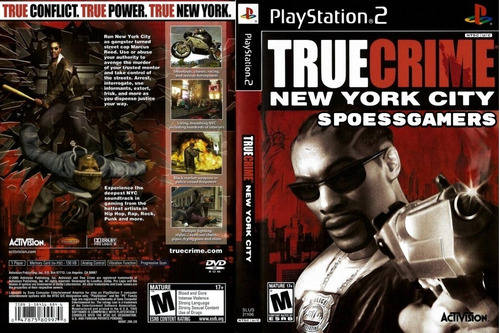

|  |
Grand Theft Auto San Andreas
Grand Theft Auto: San Andreas é um jogo de ação
e aventura com elementos de role-playing e stealth.
Estruturada de forma semelhante aos dois jogos anteriores da série,
a jogabilidade |
|  |
Bully
Bully conta a história do travesso Jimmy Hopkins, de 15 anos,
enquanto ele passa pela hilaridade e estranheza da adolescência.
Vença os atletas no dodge ball, faça brincadeiras com os |
|  |
Bomba Patch Remastered 2007
Bomba Patch é uma série de modificações (mods) da série de jogos eletrônicos
de futebol Pro Evolution Soccer, criada pelo brasileiro Allan Jefferson. |
|  |
Def Jam For NY
A história do jogo começa quando D-Mob é preso. No caminho para a delegacia,
algo acontece: um outro veículo (dirigido pelo jogador) bate no carro dos policiais.
|
|  |
True Crime NY
No game você pode explorar ruas autenticamente modeladas de Nova York como um policial à
procura de criminosos e administrando a justiça. O jogo apresenta vários |
Contatos
Planeta Games
Tel (21) 5725-4222


Desenvolvido por Planeta Games. © Copyright 2020; Todos os direitos reservados